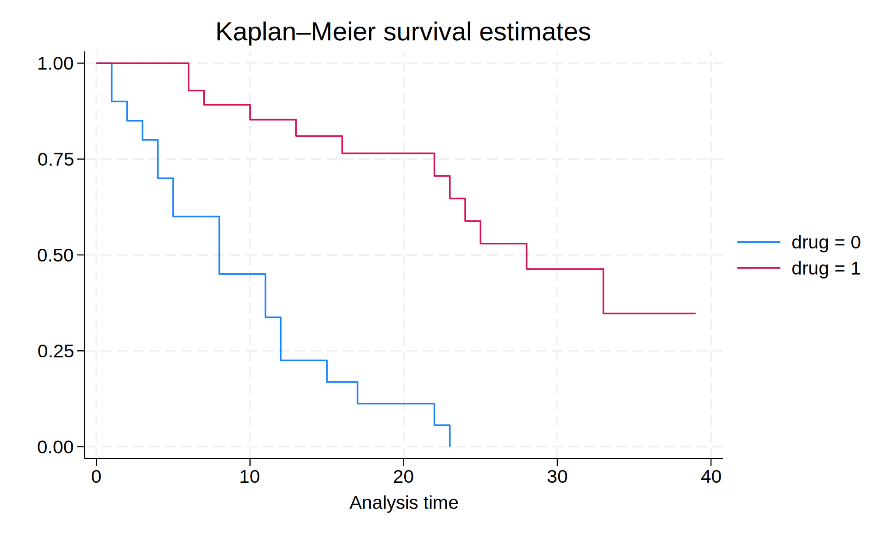
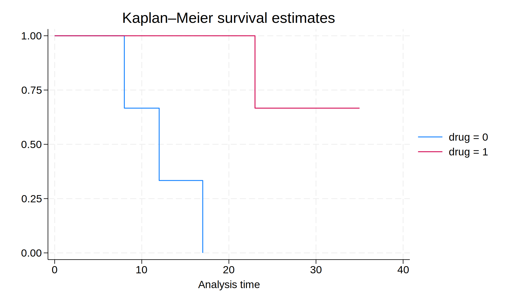
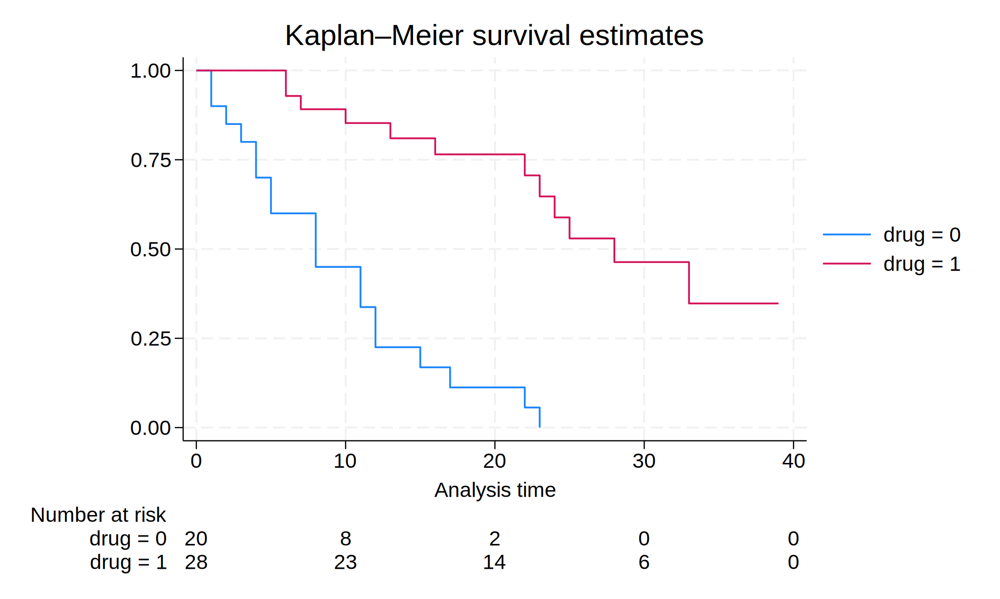
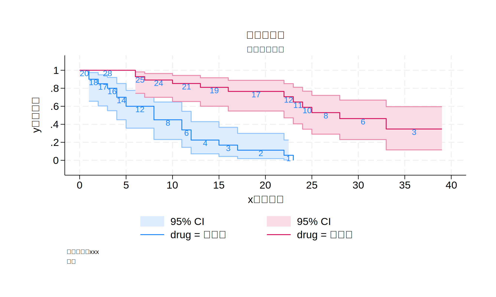

import stata_setup
stata_setup.config('C:/Program Files/Stata18', 'mp', splash=False)15-生存分析
Kaplan-Meier检验和Log-Rank检验
1 生存分析
- 描述一个组内个体的生存时间
- 寿命表法(Life tables methods)
- 非参数Kaplan-Meier曲线
- 比较两个或多个组的生存时间
- Log-rank test
- 研究生存时间和变量之间的关系
- 半参数Cox比例风险模型
- 参数生存分析模型
2 K-M曲线的历史
- 1958年，Dr. Kaplan和DrMeier 介绍了一种全新的、解决随访期间RightCensoring问题的生存分析方法
- 特点:精确地记录并利用每个个体发生终点事件的具体时间，在任何一个终点事件发生的时间点计算出一个新的、基于之前所有信息的Cumulative survival
- 优点:
- 相比于Life-table method，更加充分地利用了信息，给出更准确的统计量
- 非参数估计方法:不要求总体的分布形式，因此非常适合生存分析时使用
- K-M曲线可以很直观地表现出两组或多组的生存率或死亡率，适合在文章中展示
3 导入数据
使用 Patient Survival in Drug Trial 数据集
%%stata
webuse drugtr,clear(Patient survival in drug trial)将数据恢复成普通的数据格式：stset,clear
Stata已经将这个数据集设置成了生存数据的格式，导入数据集后，将数 据集恢复成普通的数据格式，这样才是我们在临床研究中见到的数据结构。
%%stata
stset,clear4 数据集的初步观察
%%stata
list in 5/10
+------------------------------+
| studyt~e died drug age |
|------------------------------|
5. | 4 1 0 56 |
6. | 4 1 0 67 |
7. | 5 1 0 63 |
8. | 5 1 0 58 |
9. | 8 1 0 56 |
|------------------------------|
10. | 8 0 0 58 |
+------------------------------+%%stata
codebook drug
-------------------------------------------------------------------------------
drug Drug type (0=placebo)
-------------------------------------------------------------------------------
Type: Numeric (byte)
Range: [0,1] Units: 1
Unique values: 2 Missing .: 0/48
Tabulation: Freq. Value
20 0
28 1%%stata
codebook studytime
-------------------------------------------------------------------------------
studytime Months to death or end of exp.
-------------------------------------------------------------------------------
Type: Numeric (byte)
Range: [1,39] Units: 1
Unique values: 28 Missing .: 0/48
Mean: 15.5
Std. dev.: 10.2563
Percentiles: 10% 25% 50% 75% 90%
4 7.5 12.5 23 32%%stata
codebook died
-------------------------------------------------------------------------------
died 1 if patient died
-------------------------------------------------------------------------------
Type: Numeric (byte)
Range: [0,1] Units: 1
Unique values: 2 Missing .: 0/48
Tabulation: Freq. Value
17 0
31 1%%stata
codebook age
-------------------------------------------------------------------------------
age Patient's age at start of exp.
-------------------------------------------------------------------------------
Type: Numeric (byte)
Range: [47,67] Units: 1
Unique values: 18 Missing .: 0/48
Mean: 55.875
Std. dev.: 5.6592
Percentiles: 10% 25% 50% 75% 90%
49 50.5 56 60 655 数据申明——代码操作
- 告诉Stata: 终点事件(Failure variable),随访时间(Time variable)
stset timevar, failure(failvar[==numlist])timevar: 随访时间变量failvar: 终点事件变量numlist: 终点时间变量中，哪个(哪些)值代表发生了终点事件?
%%stata
stset studytime,failure(died==1)
Survival-time data settings
Failure event: died==1
Observed time interval: (0, studytime]
Exit on or before: failure
--------------------------------------------------------------------------
48 total observations
0 exclusions
--------------------------------------------------------------------------
48 observations remaining, representing
31 failures in single-record/single-failure data
744 total analysis time at risk and under observation
At risk from t = 0
Earliest observed entry t = 0
Last observed exit t = 396 生存数据再观测
Notice：必须要在指定数据集为生存分析数据集之后(stset 之后)才能使用任何其他的 st 开始的命令。
%%stata
stsum
Failure _d: died==1
Analysis time _t: studytime
| Incidence Number of |------ Survival time -----|
| Time at risk rate subjects 25% 50% 75%
---------+---------------------------------------------------------------------
Total | 744 .0416667 48 8 17 33%%stata
stdescribe
Failure _d: died==1
Analysis time _t: studytime
|-------------- Per subject --------------|
Category Total Mean Min Median Max
------------------------------------------------------------------------------
Number of subjects 48
Number of records 48 1 1 1 1
Entry time (first) 0 0 0 0
Exit time (final) 15.5 1 12.5 39
Subjects with gap 0
Time on gap 0
Time at risk 744 15.5 1 12.5 39
Failures 31 .6458333 0 1 1
------------------------------------------------------------------------------%%stata
sts list
Failure _d: died==1
Analysis time _t: studytime
Kaplan–Meier survivor function
At Survivor Std.
Time risk Fail Lost function error [95% conf. int.]
------------------------------------------------------------------------
1 48 2 0 0.9583 0.0288 0.8435 0.9894
2 46 1 0 0.9375 0.0349 0.8186 0.9794
3 45 1 0 0.9167 0.0399 0.7930 0.9679
4 44 2 0 0.8750 0.0477 0.7427 0.9418
5 42 2 0 0.8333 0.0538 0.6943 0.9129
6 40 2 1 0.7917 0.0586 0.6474 0.8820
7 37 1 0 0.7703 0.0608 0.6236 0.8656
8 36 3 1 0.7061 0.0661 0.5546 0.8143
9 32 0 1 0.7061 0.0661 0.5546 0.8143
10 31 1 1 0.6833 0.0678 0.5302 0.7957
11 29 2 1 0.6362 0.0708 0.4807 0.7564
12 26 2 0 0.5872 0.0733 0.4304 0.7145
13 24 1 0 0.5628 0.0742 0.4060 0.6931
15 23 1 1 0.5383 0.0749 0.3821 0.6712
16 21 1 0 0.5127 0.0756 0.3570 0.6483
17 20 1 1 0.4870 0.0761 0.3326 0.6249
19 18 0 2 0.4870 0.0761 0.3326 0.6249
20 16 0 1 0.4870 0.0761 0.3326 0.6249
22 15 2 0 0.4221 0.0786 0.2680 0.5684
23 13 2 0 0.3572 0.0788 0.2087 0.5083
24 11 1 0 0.3247 0.0780 0.1809 0.4771
25 10 1 1 0.2922 0.0767 0.1543 0.4449
28 8 1 1 0.2557 0.0753 0.1247 0.4093
32 6 0 2 0.2557 0.0753 0.1247 0.4093
33 4 1 0 0.1918 0.0791 0.0676 0.3634
34 3 0 1 0.1918 0.0791 0.0676 0.3634
35 2 0 1 0.1918 0.0791 0.0676 0.3634
39 1 0 1 0.1918 0.0791 0.0676 0.3634
------------------------------------------------------------------------7 K-M曲线的绘制
语法：
sts graph [if] [in] [,options][,options] 不是必须，可以形如：,by(var)，这样就会按照 var 的分类绘制不同的线
%%stata
sts graph,by(drug)
Failure _d: died==1
Analysis time _t: studytime
7.1 图像展现更多的信息
%%stata
sts graph if age<50,by(drug)
Failure _d: died==1
Analysis time _t: studytime
%%stata
sts graph,by(drug) risktable
Failure _d: died==1
Analysis time _t: studytime
7.2 复杂绘图示例
%%stata
label drop drug_label
label define drug_label 0 "安慰剂" 1 "试验药"
label values drug drug_label
. label drop drug_label
. label define drug_label 0 "安慰剂" 1 "试验药"
. label values drug drug_label
. %%stata
sts graph, ///
by(drug) ci atrisk ///
xlabel(0(5)40) ylabel(0(0.2)1) ///
legend(position(6) ring(1) cols(2) rowgap(1) colgap(1)) ///
xtitle("x轴的标签") ytitle("y轴的标签") ///
title("这里是标题", size(medsmall)) ///
subtitle("这里是副标题", size(small)) ///
caption("注释", size(vsmall)) ///
note("数据来源：xxx", size(vsmall)) ///
graphregion(margin(10 10 10 10)) ///
plotregion(margin(5 5 5 5))
. sts graph, ///
> by(drug) ci atrisk ///
> xlabel(0(5)40) ylabel(0(0.2)1) ///
> legend(position(6) ring(1) cols(2) rowgap(1) colgap(1)) ///
> xtitle("x轴的标签") ytitle("y轴的标签") ///
> title("这里是标题", size(medsmall)) ///
> subtitle("这里是副标题", size(small)) ///
> caption("注释", size(vsmall)) ///
> note("数据来源：xxx", size(vsmall)) ///
> graphregion(margin(10 10 10 10)) ///
> plotregion(margin(5 5 5 5))
Failure _d: died==1
Analysis time _t: studytime
. 
8 检验组间差别（Log-Rank Test）
%%stata
sts test drug
Failure _d: died==1
Analysis time _t: studytime
Equality of survivor functions
Log-rank test
| Observed Expected
drug | events events
------+-------------------------
0 | 19 7.25
1 | 12 23.75
------+-------------------------
Total | 31 31.00
chi2(1) = 28.27
Pr>chi2 = 0.0000